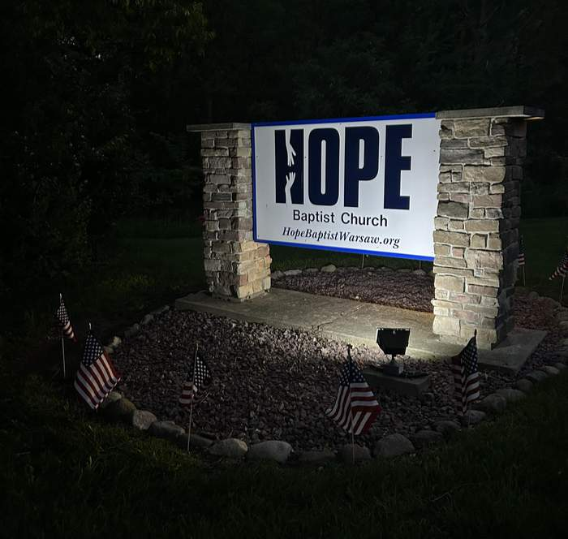
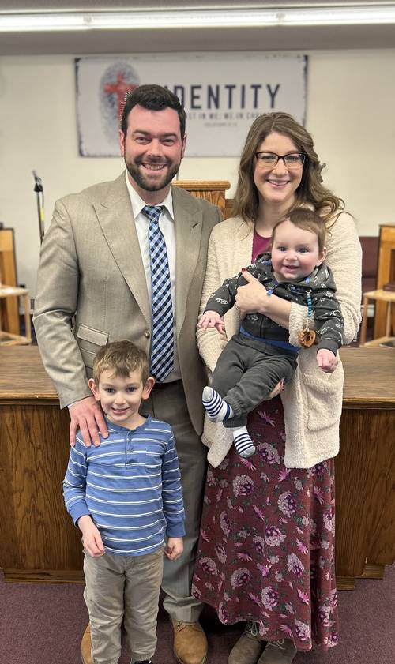
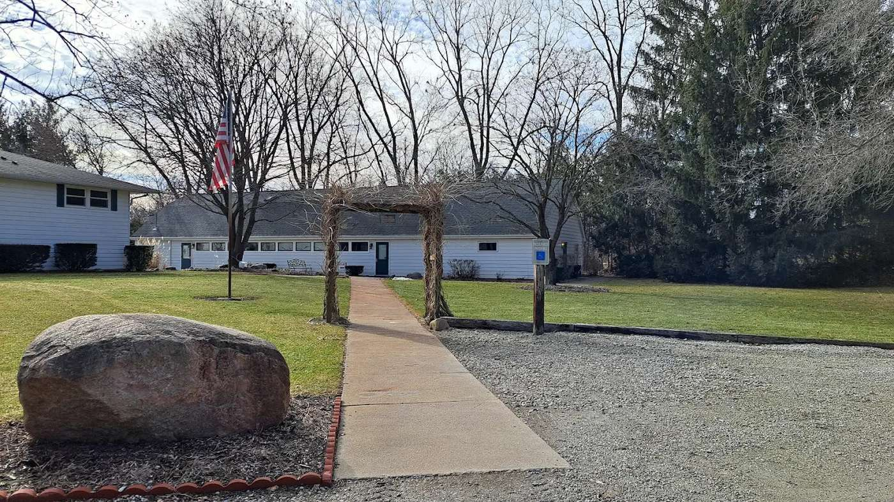
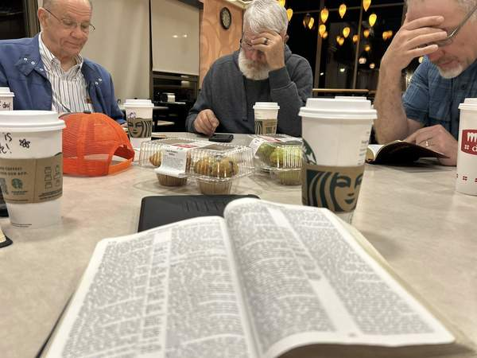
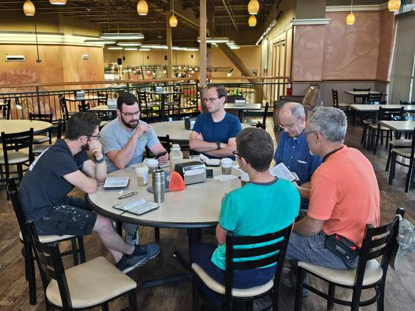
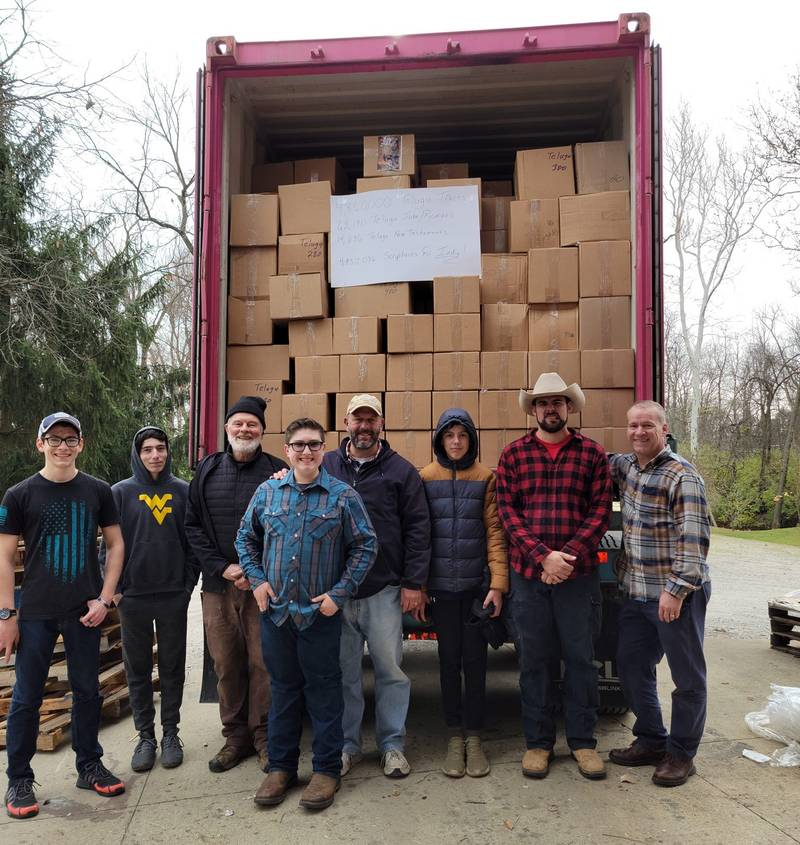

Who we are, the family you will meet, and the work God is doing through us.
Hope Baptist Church sits on the outskirts of Winona Lake and Warsaw, Indiana. We exist to reach the lost with the Gospel of Jesus Christ, to grow believers in their walk with Him, and to make disciples who go and make Him known. Whether you are exploring faith for the first time or have been following Christ for years, we would love to walk that road with you.
We believe the Christian life is a journey: saved by grace through faith, growing in holiness through the Word of God, and looking forward to the day we see Him face to face. Please join us as we worship God in spirit and in truth. You will find a genuine, caring church family here.


Pastor Stephen has served in ministry for over ten years, first as a youth pastor here at Hope Baptist, then as an assistant pastor at Martinsville Baptist Tabernacle. He and his wife Stephanie have been married for almost ten years and are raising two energetic boys.
We at Hope Baptist seek to be Biblical and God-honoring in our practice and worship. You'll find solid, Bible-based preaching, Godly traditional Christian music, and the King James Version in our services. We love our nation, we love people, we love families, and we would love to have you as our guest.
Call or email us anytime. We'd be happy to answer any questions.
A Christ-centered church where people study the Word together, serve one another, and reach the world with the Gospel.




The ways our church family serves God and one another, here in Warsaw and around the world.